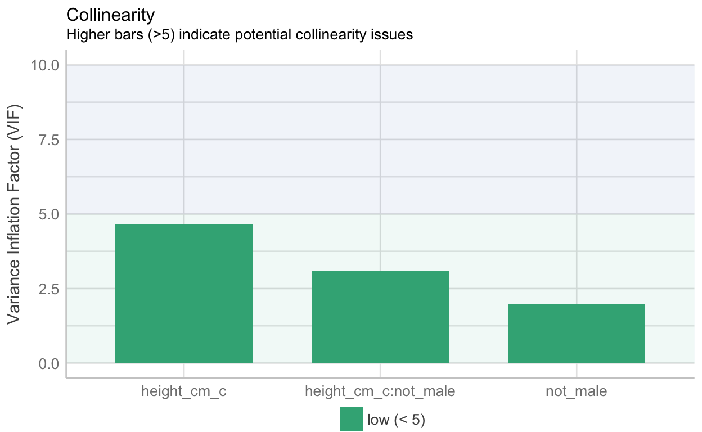

Required readings
Required readings are as follows:
Preamble
Make sure that you install the rethinking package and the ggdag package. Note that the rethinking package is not on cran.
What is a regression model
Before the break, we introduced basic concepts in statistical regression.
To refresh your memory, lets focus on the relationship between the speed of a car and the distance that it takes for a car to stop. Well use the cars dataset which is automatically loaded when you start R. Note: the data were collected in the 1920s
Here is our model
model_simple <- lm(dist ~ speed, data = cars)
Here we have the output:
parameters::parameters(model_simple)
Parameter | Coefficient | SE | 95% CI | t(48) | p
-------------------------------------------------------------------
(Intercept) | -17.58 | 6.76 | [-31.17, -3.99] | -2.60 | 0.012
speed | 3.93 | 0.42 | [ 3.10, 4.77] | 9.46 | < .001How do we interpret the results?
We can write this output in the following way:
\[ \operatorname{\widehat{dist}} = -17.58 + 3.93(\operatorname{speed}) \]
The model says that the expected stopping distance for a car is -17.58 feet when the speed of the car is set to zero, plus an additional 3.93 feet for each additional unit of speed (here in miles per hour).
What strikes you about this model?
If you are like me you probably feel confusion when you see the number -17.58 predicting speed. Did car manufacturers of the 1920s invent a method for traversing space and time as we know it? Or is regression a hopeless tool for understanding the world and should you demand your money back for this course?
Lets look at the data more carefully:
cars%>%
dplyr::arrange(speed)%>%
tibble()
# A tibble: 50 x 2
speed dist
<dbl> <dbl>
1 4 2
2 4 10
3 7 4
4 7 22
5 8 16
6 9 10
7 10 18
8 10 26
9 10 34
10 11 17
# with 40 more rowsHere we find that the lowest speed measured in this dataset is 4 miles per hour, at which distance the car stopped in 2 feet. Another car travelling at 4 mph took 10 feet to stop.
Lets plug these two numbers into the regression equation that we just estimated.
Is this any better? Were still getting a negative speed.
Plotting the data we have:
ggplot2::ggplot(data = cars,
aes( x = speed, y = dist )) +
geom_smooth(method = "lm") +
geom_point()
Here, our linear model is minimising the average distance between between observed speed and observed distance in the sample. The model hits at most a few points in the dataset. Otherwise it estimates a response that is either too high or two low.
In this case, we render the meaningless intercept term -17.5790949 interpretable by setting centering our predictor variable speed:
# center and create new dataframe
schmars <- cars%>%
dplyr::mutate(speed_s = scale(speed, center = TRUE, scale = FALSE))
model_simple2 <- lm(dist ~ speed_s, data = schmars)
parameters::parameters(model_simple2)
Parameter | Coefficient | SE | 95% CI | t(48) | p
------------------------------------------------------------------
(Intercept) | 42.98 | 2.18 | [38.61, 47.35] | 19.76 | < .001
speed_s | 3.93 | 0.42 | [ 3.10, 4.77] | 9.46 | < .001Notice that the estimated coefficient for speed is the same:
# evaluate whether the two coefficients are the same at least to five decimal places
round(coef(model_simple)[[2]],5) == round(coef(model_simple2)[[2]],5)
[1] TRUEAnd the graph is the same:
ggplot2::ggplot(data = cars,
aes( x = speed, y = dist )) +
geom_smooth(method = "lm") +
geom_point()

This examples serves as a reminder about how a regression model works. However it also makes an important point to which well return repeatedly throughout this course:
The output of a statistical model is is not self evident. We must therefore think both before and after we write a statistical model. If we dont think, our statistical models will lead us astray.
In the remainder of this lecture Im going to introduce a tool the concept of regression with multiple predictors. I used to think that multiple regression was easy. As we see, however, multiple regression can very easily lead us to the wrong inference if we do not think about our research question, our data, and what a statistical model is doing (or not doing) to clarify the relationship between our data and our research question.
To introduce multiple regression Im going to follow Richard McElreaths Statistical Rethinking. We have an online version of this book in our library (see the link above.)
Multiple regression
We have already encountered multiple regression. Perhaps the most familiar case is prediction. Suppose we want to predict someones expected income based on their gender identification. Suppose we theory is true there might be an added income advantage from height. We can include an additional term in our model and evaluate whether or theory is true. Lets assess this question using the jittered NZAVS dataset
# turn off scienitific notation
options(scipen = 0)
# model
model_theory <- lm(income ~ height_cm_c + not_male, data = df)
sjPlot::tab_model(model_theory)
| income | |||
|---|---|---|---|
| Predictors | Estimates | CI | p |
| (Intercept) | 142397.64 | 131258.64153536.64 | <0.001 |
| height_cm_c | 138.22 | 61.15215.29 | <0.001 |
| not_male [Not_Male] | -9927.30 | -25243.885389.29 | 0.204 |
| Observations | 1731 | ||
| R2 / R2 adjusted | 0.020 / 0.019 | ||
mean(nz_0$HLTH.Height, na.rm=TRUE)
[1] 1.694277The model tells us the following. The expected household income is 1.4239764^{5} for men at sample average height, which is 1.6942769meters. The expected increase in income for each additional centimeter of height is 138.2239286. The expected reduction in income for people who do not identify as male is -9927.2961633
Are men expected to make -9927.2961633 more than woman? No because on average woman are shorter. If we focus on male-id but remove height we have:
| income | |||
|---|---|---|---|
| Predictors | Estimates | CI | p |
| (Intercept) | 153753.08 | 144623.34162882.82 | <0.001 |
| not_male [Not_Male] | -28349.98 | -39814.07-16885.89 | <0.001 |
| Observations | 1736 | ||
| R2 / R2 adjusted | 0.013 / 0.013 | ||
We find that women (and others who do not identify as male) are are expected to make -2.8349981^{4} less than men.
Note that regression allows us to stratify across other segments of a population by adding more covariates. Lets add education to the model. In the NZAVS education Edu is a 10-level factor. However, for now, well think of it as numeric. A standard deviation of Edu is 2.5441461 out of 0 to 10. Adding edu_s to the model we find:
Futher adjustments
model_theory3 <- lm(income ~ height_cm_c + not_male + edu_s, data = df)
sjPlot::tab_model(model_theory3)
| income | |||
|---|---|---|---|
| Predictors | Estimates | CI | p |
| (Intercept) | 147759.81 | 136605.32158914.29 | <0.001 |
| height_cm_c | 110.12 | 33.15187.10 | 0.005 |
| not_male [Not_Male] | -17251.89 | -32584.57-1919.22 | 0.027 |
| edu_s | 21228.03 | 15726.5626729.50 | <0.001 |
| Observations | 1710 | ||
| R2 / R2 adjusted | 0.053 / 0.051 | ||
Do height differences make more of a difference for male-ids than non-male-ids? To assess this we add an interaction term. NOTE: we should always center and preferably also scale our interaction terms for the same reason that we should center polynomials: otherwise the multi-collinearity renders the model unstable
Interactions
# model
model_theory4 <- lm(income ~ height_cm_c * not_male, data = df)
Note that this model is equivalent to:
model_theory4 <- lm(income ~ height_cm_c + not_male + not_male:height_cm_c, data = df)
The * in the model is merely shorthand for the two main effects height_cm_c + not_male \(+\) their interaction not_male:height_cm_c. Note that if we merely wanted to estimate the interaction without also estimating the main effects we would write:
model_theory5<- lm(income ~ not_male:height_cm_c, data = df)
parameters::parameters(model_theory5)
Parameter | Coefficient | SE | 95% CI | t(1728) | p
---------------------------------------------------------------------------------------------------
(Intercept) | 1.31e+05 | 3663.35 | [1.24e+05, 1.38e+05] | 35.68 | < .001
not_male [Male] * height_cm_c | 258.06 | 47.68 | [ 164.53, 351.59] | 5.41 | < .001
not_male [Not_Male] * height_cm_c | 81.67 | 48.75 | [ -13.95, 177.28] | 1.68 | 0.094 Such a model tells us that the population household average is about NZD 131,000, and the slope difference for height by gender is three times greater for male-ids than for non-male-ids in the population.
Generally you should include the main effects and the interactions of your indicator:
model_theory4 <- lm(income ~ height_cm_c * not_male, data = df)
Which gives us:
sjPlot::tab_model(model_theory4)
| income | |||
|---|---|---|---|
| Predictors | Estimates | CI | p |
| (Intercept) | 134509.30 | 121020.07147998.53 | <0.001 |
| height_cm_c | 233.14 | 113.38352.90 | <0.001 |
| not_male [Not_Male] | -5311.89 | -21251.3610627.58 | 0.513 |
|
height_cm_c * not_male [Not_Male] |
-161.81 | -318.18-5.45 | 0.043 |
| Observations | 1731 | ||
| R2 / R2 adjusted | 0.023 / 0.021 | ||
Whoooah what just happened? Theres huge uncertainty about the main effect of male-id it is no longer a reliable predictor in this model.
To assess the magnitude of the uncertainty lets plot the regression coefficients:
sjPlot::plot_model(model_theory4)
The main effect of not_male is nearly 35k per year! Whats going on here? Recall that multi-collinearity or when two indicators are highly correlated, tend to result in large uncertainty in coefficient estimates. Is the interaction messing up the model? Lets check:
x<-performance::check_collinearity(model_theory4)
x ## looks ok
# Check for Multicollinearity
Low Correlation
Term VIF Increased SE Tolerance
height_cm_c 4.33 2.08 0.23
not_male 1.94 1.39 0.51
height_cm_c:not_male 2.87 1.69 0.35plot(x)
As indicated in the graph, the problem isnt multi-collinearity.
Does this mean that income is really predicted by height, and gender is a red herring? I have seen regression models interpreted that way.
It looks that way:
modelbased::estimate_means(model_theory4)
not_male | Mean | SE | 95% CI
----------------------------------------------------
Male | 1.34e+05 | 6903.13 | [1.21e+05, 1.48e+05]
Not_Male | 1.29e+05 | 4312.74 | [1.21e+05, 1.38e+05]
p-values are uncorrected.However this is comparing male-ids and not-male ids at equivalent levels of height, but we know that non-male-ids tend to be shorter.
However wherever you have interactions it is essential to graph the results. This is so important Im going to write it again: wherever you have interactions it is essential to graph the results. Tables are notoreously difficult to interpret. So lets probe further by graphing the model predictions. Recall that we can do this using the ggeffects package.
The following graph makes it easier to see how male-id fails to predict income whereas the interaction of male-id x income does predict income:
Or consider this graph
This graph graphs height along the x-axis, and plots two different line. What we find is a non-linearity. The model predicts that, on average, short men are expected to make much less than short women. Among non male-ids, height differences are not a reliable predictor of household income. By contrast among male-ids, height differences are a reliable predictor. non-male-ids tend to be shorter than men by about 13cm
Sample averages:
df%>%
summarise(mean(HLTH.Height, na.rm = TRUE))
mean(HLTH.Height, na.rm = TRUE)
1 1.698797Sample differences by gender-id:
df%>%
group_by(not_male)%>%
summarise(mean(HLTH.Height, na.rm = TRUE))
# A tibble: 3 x 2
not_male `mean(HLTH.Height, na.rm = TRUE)`
<chr> <dbl>
1 Male 1.78
2 Not_Male 1.65
3 <NA> 1.69Lets plug in the values for male-id and not male-id at the population average for each population:
\[ \operatorname{\widehat{income}} = 134509.3 + 233.14(\operatorname{height\_cm\_c}) - 5311.89(\operatorname{not\_male}_{\operatorname{Not\_Male}}) - 161.81(\operatorname{height\_cm\_c} \times \operatorname{not\_male}_{\operatorname{Not\_Male}}) \] To get the expected average for the male-id population we compute the regression equation as follows
coef(model_theory4)[[1]] + # intercept about 170 cm
coef(model_theory4)[[2]] * 80 + # male-id are 8 cm taller than sample average # note we include this even though the coefficient is unreliable
coef(model_theory4)[[3]]* 0 + # male-id are coded as zero +
coef(model_theory4)[[4]]* 80 * 0 # 8cm difference * male-id are coded as zero (which zeros this out)
[1] 153160.5For the female-id population we compute the regression equation as follows
coef(model_theory4)[[1]] + # intercept about 170 cm
coef(model_theory4)[[2]] * -50 + # not male-id are 5 cm shorter than sample average #
coef(model_theory4)[[3]]* 1 + # not male-id are coded as 1 +
coef(model_theory4)[[4]] * -50 # 5cm shorter * male-id are coded as zero (which zeros this out)
[1] 125631Compare these estimates with the model in which we did not have the interaction but only the additive predictors of male-id and height. We can do this quickly using the modelbased package.
modelbased::estimate_means(model_theory2)
not_male | Mean | SE | 95% CI
----------------------------------------------------
Male | 1.54e+05 | 4654.86 | [1.45e+05, 1.63e+05]
Not_Male | 1.25e+05 | 3535.09 | [1.18e+05, 1.32e+05]
p-values are uncorrected.We find that the estimates are similar.
Model selection
Which model should we prefer? Recall that we can use the AIC or BIC information criterion to select a model, with a decrease in the absolute values of either as affording a reason to prefer one over the other.
performance::compare_performance(model_theory,
model_theory2,
model_theory3,
model_theory4,
model_theory5)
# Comparison of Model Performance Indices
Name | Model | AIC | BIC | R2 | R2 (adj.) | RMSE | Sigma
-----------------------------------------------------------------------------------------
model_theory | lm | 45318.490 | 45340.316 | 0.020 | 0.019 | 1.169e+05 | 1.170e+05
model_theory2 | lm | 45457.405 | 45473.783 | 0.013 | 0.013 | 1.172e+05 | 1.173e+05
model_theory3 | lm | 44725.128 | 44752.349 | 0.053 | 0.051 | 1.153e+05 | 1.155e+05
model_theory4 | lm | 45316.366 | 45343.648 | 0.023 | 0.021 | 1.168e+05 | 1.169e+05
model_theory5 | lm | 45314.794 | 45336.620 | 0.022 | 0.021 | 1.168e+05 | 1.169e+05We can graph the models along different criteria
xx <- performance::compare_performance(model_theory,
model_theory2,
model_theory3,
model_theory4,
model_theory5)
plot(xx)
We find that model three performed the best. Recall that this is the model that included education:
model_theory3 <- lm(income ~ height_cm_c + not_male + edu_s, data = df)
What if we were to include an interaction with height and male-id?
model_theory6 <- lm(income ~ height_cm_c * not_male + edu_s, data = df)
Theres no improvement in this model. After adjusting for education, height, and male-id, we do not see an improvement from including a non-linear ajustment for the height effect for the different male-id factors:
performance::compare_performance(model_theory3,model_theory6)
# Comparison of Model Performance Indices
Name | Model | AIC | BIC | R2 | R2 (adj.) | RMSE | Sigma
-----------------------------------------------------------------------------------------
model_theory3 | lm | 44725.128 | 44752.349 | 0.053 | 0.051 | 1.153e+05 | 1.155e+05
model_theory6 | lm | 44723.874 | 44756.540 | 0.054 | 0.052 | 1.152e+05 | 1.154e+05What about if we were to include age?
library("splines")
model_theory7 <- lm(income ~ bs(age_10_c) + height_cm_c * not_male + edu_s, data = df)
parameters::parameters(model_theory7)
Parameter | Coefficient | SE | 95% CI | t(1702) | p
-------------------------------------------------------------------------------------------------------
(Intercept) | 88679.91 | 26433.28 | [ 36834.77, 1.41e+05] | 3.35 | < .001
age_10_c [1st degree] | 1.06e+05 | 61189.54 | [-14209.40, 2.26e+05] | 1.73 | 0.084
age_10_c [2nd degree] | 70138.47 | 27538.88 | [ 16124.85, 1.24e+05] | 2.55 | 0.011
age_10_c [3rd degree] | -179.26 | 43887.04 | [-86257.49, 85898.96] | -4.08e-03 | 0.997
height_cm_c | 175.22 | 61.41 | [ 54.77, 295.66] | 2.85 | 0.004
not_male [Not_Male] | -16438.03 | 8293.88 | [-32705.32, -170.75] | -1.98 | 0.048
edu_s | 21199.41 | 2834.48 | [ 15639.98, 26758.84] | 7.48 | < .001
height_cm_c * not_male [Not_Male] | -125.68 | 79.28 | [ -281.17, 29.81] | -1.59 | 0.113 The model has an improved fit, and explains more, the AIC decreases, but the BIC increases. This is because the BIC penalises the extra parameters.
za<-performance::compare_performance(model_theory3, model_theory7) # age, benefit but only if polynomial
za
# Comparison of Model Performance Indices
Name | Model | AIC | BIC | R2 | R2 (adj.) | RMSE | Sigma
-----------------------------------------------------------------------------------------
model_theory3 | lm | 44725.128 | 44752.349 | 0.053 | 0.051 | 1.153e+05 | 1.155e+05
model_theory7 | lm | 44711.671 | 44760.669 | 0.064 | 0.061 | 1.146e+05 | 1.149e+05plot(za)

The predicted effect of age (splines)
Anova and T-test
You can write these as linear models.
This is a one-way anova in which the grouping variable not_male is the condition and income is the outcome.
Anova#anova
m2 <- aov(income ~ not_male, data = df)
parameters::parameters(m2)
Parameter | Sum_Squares | df | Mean_Square | F | p
-------------------------------------------------------------
not_male | 3.24e+11 | 1 | 3.24e+11 | 23.52 | < .001
Residuals | 2.39e+13 | 1734 | 1.38e+10 | | This is how the report package says you should report. Ive tweaked the wording because I cannot write statistically significant without vomitting:
The ANOVA (formula: income ~ not_male) suggests that:
- The main effect of not_male is statistically significant (F(1, 1734) = 23.52, p < .001; Eta2 = 0.01, 90% CI [5.87e-03, 0.02])
Effect sizes were labelled following Fields (2013) recommendations.
I recommend the modelbased package, which comes as part of easystats to explore your model
modelbased::estimate_relation(m2)
not_male Predicted SE CI_low CI_high
1 Male 153753.1 4654.863 144623.3 162882.8
2 Not_Male 125403.1 3535.087 118469.6 132336.6Compare this against the linear model:
m2l <- lm(income ~ not_male, data = df)
parameters::parameters(m2l)
Parameter | Coefficient | SE | 95% CI | t(1734) | p
---------------------------------------------------------------------------------------
(Intercept) | 1.54e+05 | 4654.86 | [ 1.45e+05, 1.63e+05] | 33.03 | < .001
not_male [Not_Male] | -28349.98 | 5845.05 | [-39814.07, -16885.89] | -4.85 | < .001This is how the report package says you should report. Ive tweaked the wording because I cannot write statistically significant without vomiting.
We fitted a linear model (estimated using OLS) to predict income with not_male (formula: income ~ not_male). The model explains a statistically significant proportion of variance (R2 = 0.01, F(1, 1734) = 23.52, p < .001, adj. R2 = 0.01). The models intercept, corresponding to not_male = 0, is at 1.54e+05 (95% CI [1.45e+05, 1.63e+05], t(1734) = 33.03, p < .001). Within this model:
- The effect of not_male [Not_Male] is significantly negative (beta = -28349.98, 95% CI [-39814.07, -16885.89], t(1734) = -4.85, p < .001; Std. beta = -0.24, 95% CI [-0.34, -0.14])
Standardized parameters were obtained by fitting the model on a standardized version of the dataset.
These are the estimated means, which are identical to the ANOVA.
modelbased::estimate_relation(m2l)
not_male Predicted SE CI_low CI_high
1 Male 153753.1 4654.863 144623.3 162882.8
2 Not_Male 125403.1 3535.087 118469.6 132336.6Im not goint to spend any more time with ANOVA. This isnt because Im dimissive of ANOVA. It can be a useful framework for certain questions. However, it is never going to produce different answers than you would obtain in a linear regression framework. Moreover the linear regression framework is much more flexible, and can be extending However in case you are required to formulate your regression model, Ive included some R syntax for you here.
One way ANOVA
aov(Y ~ Grp, data = data)
Assumptions:
- normal distribution of the of the DVs within each group
- homogeneity of variances within each group
- random sample from the population
- independent observations
Two way ANOVA
aov(Y ~ Grp * Male, data = data)
This model can be written
aov(Y ~ Grp + Male + Grp:Male, data = data)
- normal distribution of the of the DVs within each group
- homogeneity of variances within each group
- random sample from the population
- independent observations
What is causal confounding?

The difference between prediction and explanation?
Examples of confounding